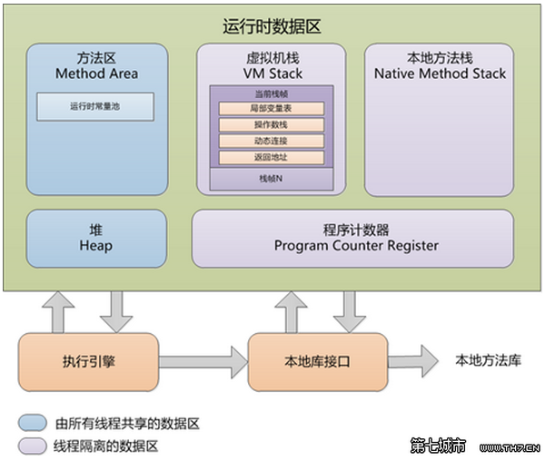
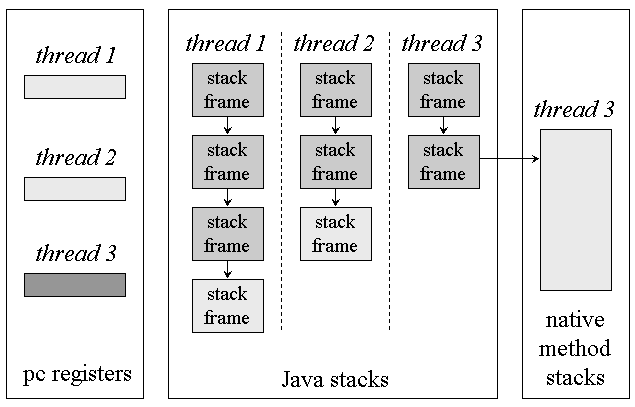
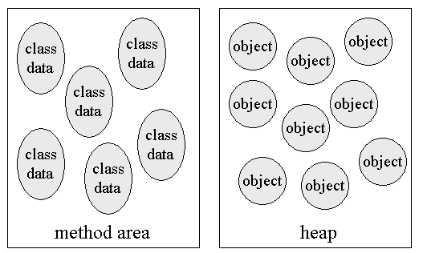
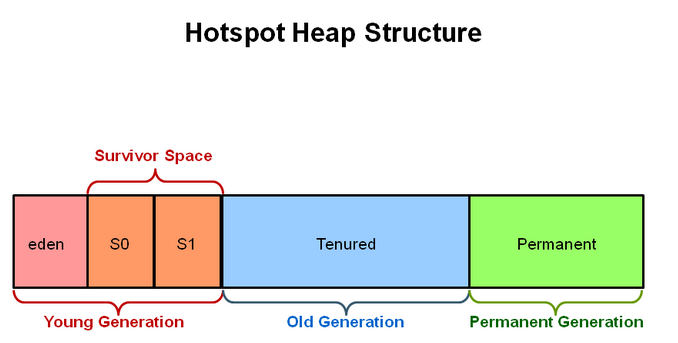

前言
做Java开发，垃圾回收是避不开的话题，虽然Java程序员不用像C或者C++程序员那样自己申请\释放内存空间，这些都由JVM替我们完成了，但是开发过程中还是需要了解其中内存回收也就是垃圾回收的机制。
这里我们先提出三个问题：
- 那些内存需要回收？
- 什么时候回收？
- 如何回收？
Java虚拟机内部结构模型

线程独享区域

-
程序计数器(program counter register)：记录当前程序执行的字节码行号 -
Java虚拟机栈(java virtual machine stack)：LIFO的数据结构，每次方法调用都会创建一个 栈帧(frame) 并添加到栈的顶部。 -
本地方法栈(native method stack)：为JNI(java 本地调用)服务，作用同上。
Stack 可以是动态或者固定大小的，当线程申请的栈容量大于最大容量时会抛出StackOverflowError，当线程创建一个新栈帧(frame)但没有申请到足够内存空间时会抛出OutOfMemoryError。
线程共享区域

-
方法区(method area)：它主要存放JVM已经加载过的类的信息、静态变量、常量等，它有个重要的区域叫 常量池(The Constant Pool) -
堆(heap)：为类实例(class instance)和数组对象(array)分配内存的区域。
如果方法区的内存空间不足时，会抛出OutOfMemoryError，堆如果超过自动内存管理器所能提供的最大容量时，也会抛出OutOfMemoryError。
垃圾回收策略
垃圾标记策略
-
引用计数(reference counting) -
根索引
Java 1.2 之前主要用 引用计数算法 进行垃圾标记，1.2之后 主要用 根搜索算法 进行垃圾标记。
垃圾回收策略
-
标记-清除(Mark-Sweep) -
复制(Copying) -
标记-整理(Mark-Compact)
新生代(minor GC)主要采用 标记-整理 策略，老生代采用 *标记清除*策略
堆模型
JVM为了优化回收效率，采用了按代回收的策略。采用这一策略是基于以下假设（弱年代假设）：
- 大多数对象短时间内会变的不可达
- 少数大龄对象会持有指向新生对象的引用
HotSpot JVM在实现时，根据这一策略，对Heap进行了如下划分：

-
新生代(Young)：它又被划分为三个区，Eden区和两个大小严格相同的Survivor区。 -
老年代(Tenured)：存放生命周期长的对象，这些对象是在经过几次Young区的复制转移后，被转移到这的。例如：一般系统中application级别的缓存，缓存的对象就放在此区。 -
持久代(Perm)：存放class、method、filed对象，一般不会溢出，但是在涉及到热部署应用时，可能会遇到java.lang.OutOfMemoryError : PermGen space 的问题。
Java8中已经没有PermGen 取而代之的是Metaspace
HotSpot提供了多个垃圾回收器，我们可以根据需要组合使用，这里就不一一列出了，只写一下常用的组合：
新生代采用 Parallel(ParNew)，老生代采用 Concurrent Mark Sweep(CMS)，JVM参数为：-XX:+UseConcMarkSweepGC -XX:+UseParNewGC
日期：2015-1-6
参考资料：